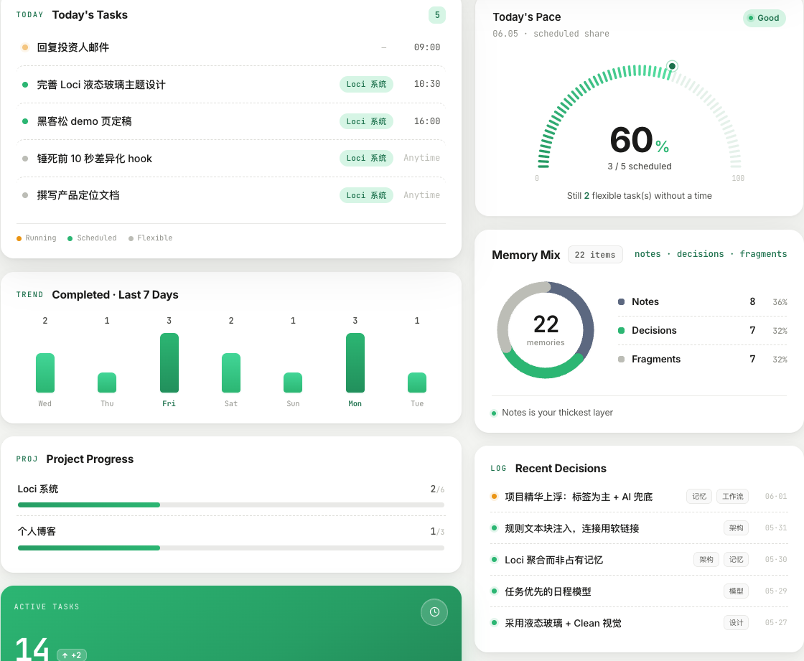
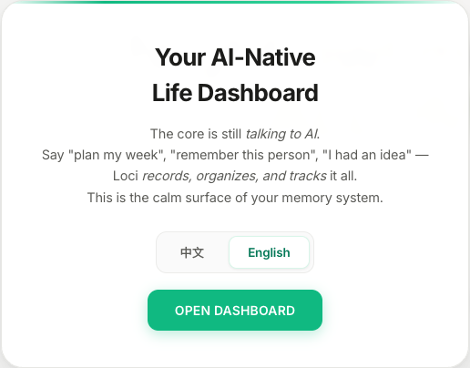

~/loci
本地优先的结构化记忆。把 Loci 翻过来看 —— 五个侧面，点一下，每一面都亮起来。 Local-first structured memory. Turn Loci over and look — five facets, one click each, every side lights up.

npx create-loci推荐recommendedgit clone … && ./setup.shnode .loci/dashboard/server.jslocalhost:8765浏览器打开in browser
说就行,Loci 自动判断该归到哪、写进对应文件 —— 你不用记着去存。Just say it. Loci figures out where each one belongs and files it — you never have to remember to save.